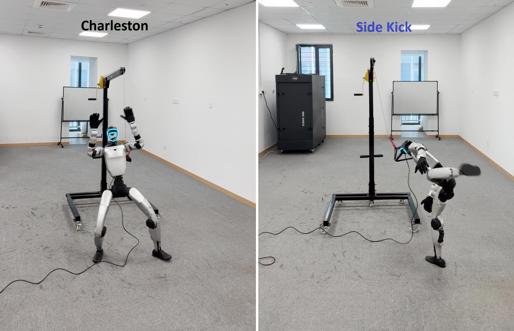
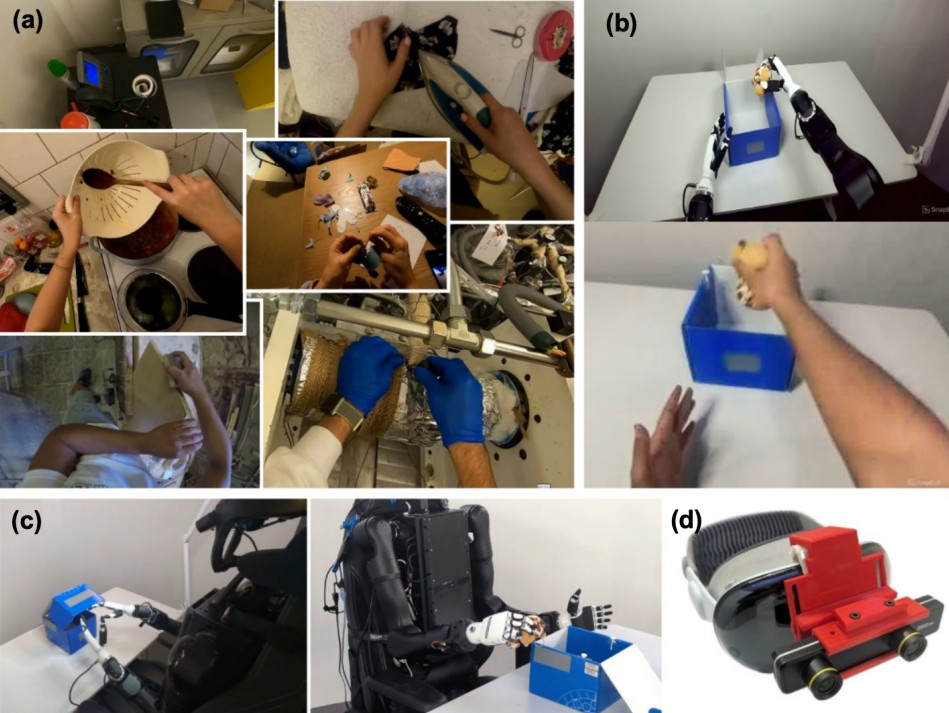
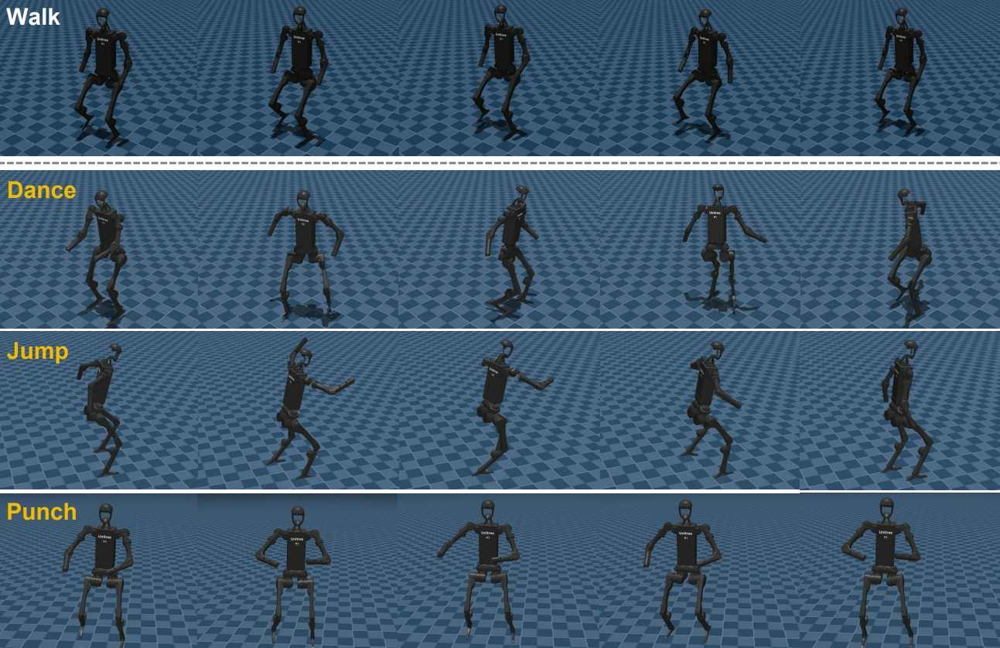
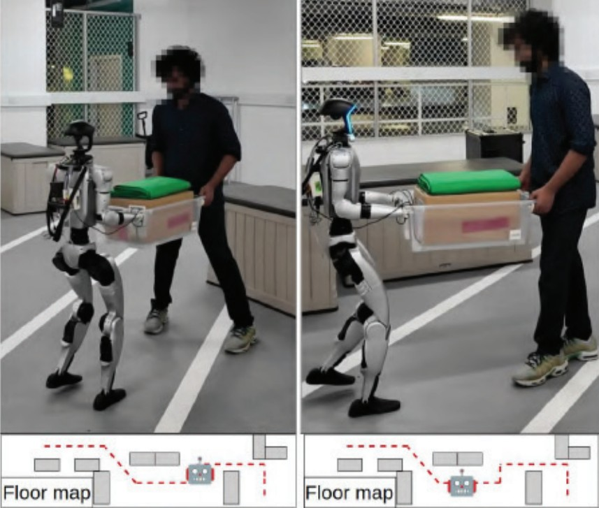
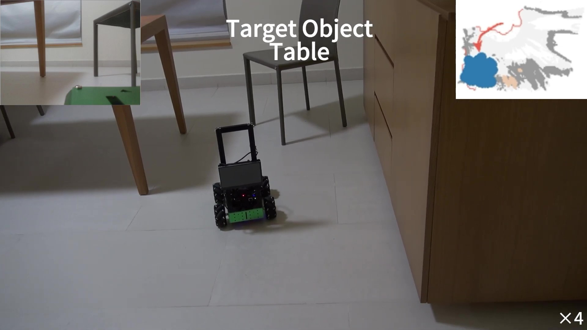
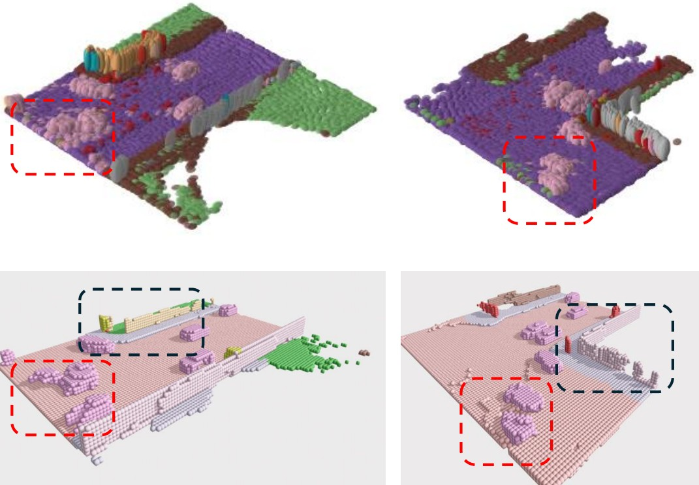
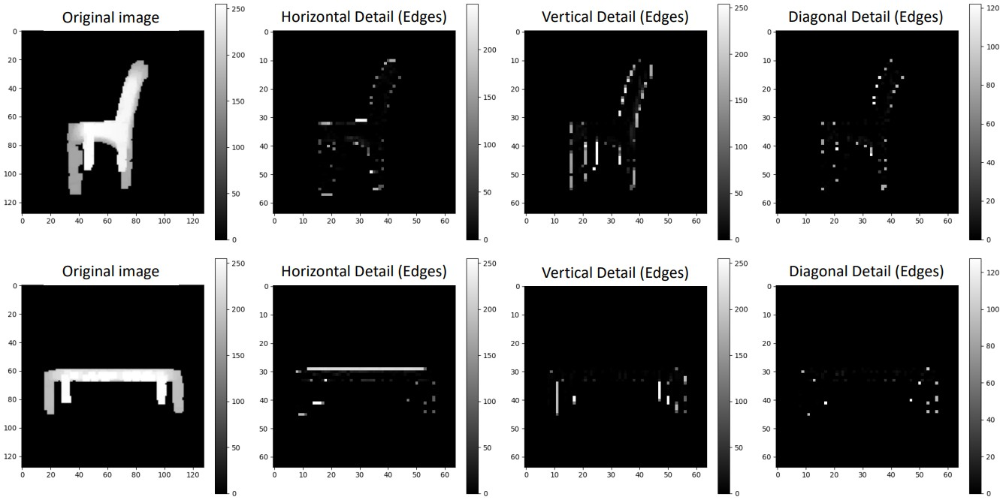
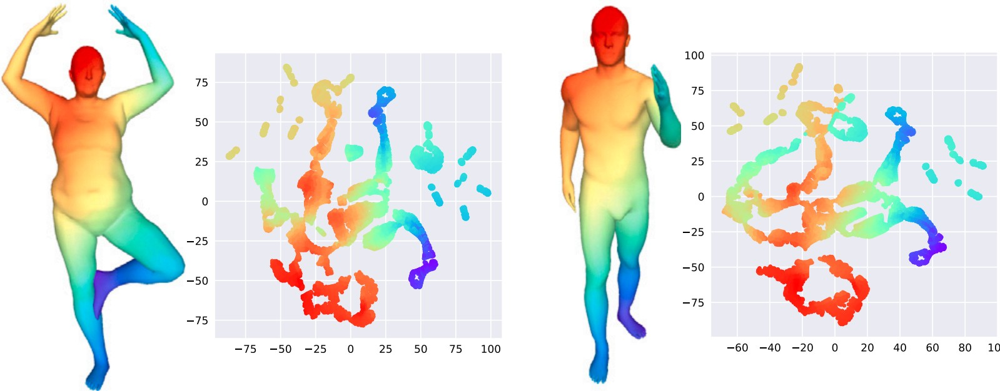

Publications
A full and up-to-date list is on Google Scholar.
Robotics: Humanoid and Dexterous Hand

Continual Humanoid Motion Learning
In submission 2026



Robotics: Manipulation & Multi-robot Collaboration
Robotics: Navigation

3D Computer Vision & Representation Learning


